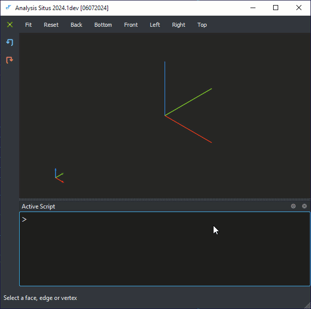

Load CAD assembly from STEP
To load a STEP file as a CAD assembly, use asm-xde-load Tcl command in the Active Script prompt.
set workdir ... asm-xde-load -model M -filename $workdir/chassis.stp asm-xde-browse -model M
The created model M is a Tcl variable which represents the initialized OCAF/XDE document.
